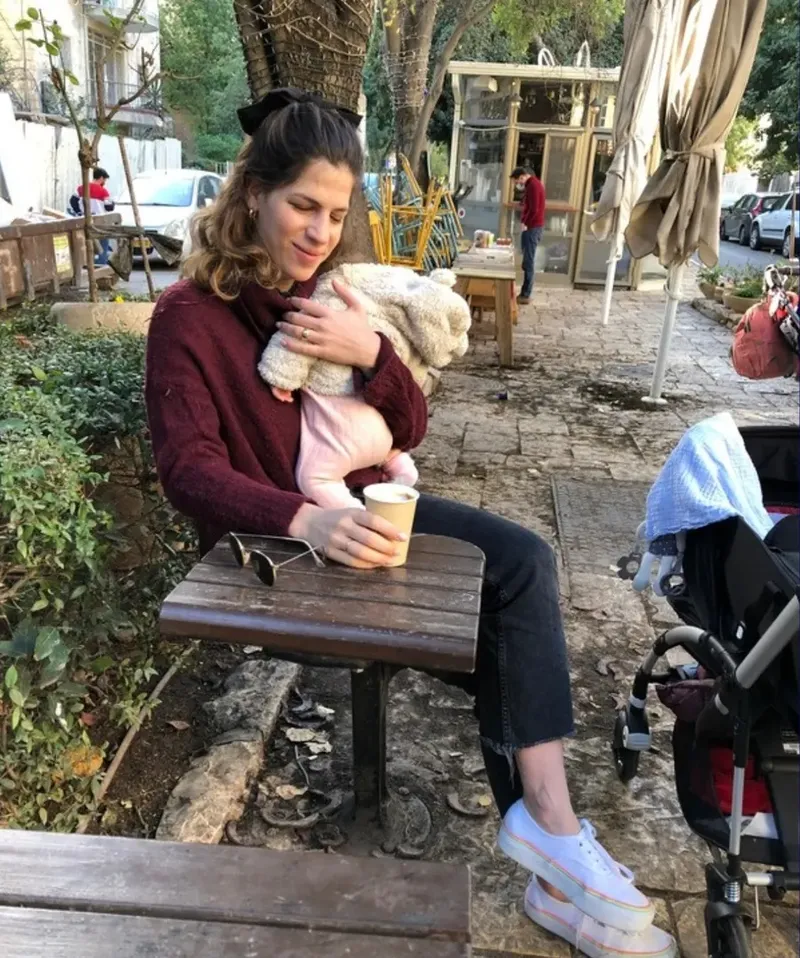

הכל התחיל ביום אחד במרץ 2020

היום שבו הודיעו על סגר הקורונה הראשון, ואותו היום שבו גיליתי שאני בהריון הראשון שלי.
עסקתי אז באיפור ושיער לכלות, וברגע אחד העבודה שלי נפסקה. כל האירועים העתידיים בוטלו, והייתי צריכה להחזיר מקדמות לכולן.

בעלי מני ואני היינו אז "חוסכים מצטיינים", והרגשתי ביטחון כשראיתי את הכסף נצבר בעו״ש, קרוב אליי.
אבל פתאום, כשהכל נעצר, קלטתי: אני רוצה עתיד חלומי לבת שלי. טיולים, חוויות, זמן איכות, בית מרווח. אבל הכל תלוי בכסף שאצליח להביא הביתה ולחסוך כל חודש.
ההוצאות עומדות לעלות משמעותית, והזמן שלי לעבוד יהיה פחות. וכמה כבר אצליח לחסוך כל חודש?
ידעתי שיש אנשים שמשקיעים ומגדילים את הכסף שלהם, אבל פחדתי מזה מאוד. לא ידעתי איך עושים את זה, ובעיקר לא רציתי להפסיד את מה שעבדתי כל כך קשה כדי להשיג.
עד שפגשתי כלה שסיפרה לי שיש לה כבר 3 דירות, והיא התחילה עם הסכום שכבר היה לי ביד.
באותו רגע נפל לי האסימון: זה אפשרי גם עבורי. מתנהל פה עולם שלם במקביל אליי, ואני אפילו לא במשחק.

משם יצאתי למסע של מעל 5 שנים: קורסים, ייעוצים, נדל״ן, שוק ההון, קריפטו. עשיתי גם טעויות לאורך הדרך, אבל זה השתלם בענק.
הכפלנו את ההון העצמי שלנו פי 8. שנינו החלפנו עבודה לעבודה הרבה יותר נוחה וגמישה, שמאפשרת לנו להיות עם הבנות שלנו. ואנחנו עומדים לבנות את בית החלומות שלנו, שחשבנו שייקח לנו עוד שנים עד שנגיע אליו.
והכי חשוב לי: הבנות שלי

אלה ואביב. לכל אחת מהן בניתי מסלול שמכוון להגיע ליותר מחצי מיליון שקל (אחרי המיסים) בגיל 25, כדי לפתוח להן דלתות לכל החלומות שיהיו להן.
לאורך הדרך גיליתי המון דברים שאף אחד לא טרח לספר לי מראש, והרגשתי מרומה. אז החלטתי להעביר אותם הלאה, וזה הפך להיות מה שאני עושה ביום-יום.
מה שהלוואי שהייתי יודעתהעו״ש לא שומר על הכסף שלי. הוא אוכל אותו לאט.
הדבר הראשון והכי חשוב שהבנתי: האינפלציה בישראל אוכלת בממוצע בין 3% ל-4% בשנה. כל שנה שעוברת, הכסף בעו״ש שווה פחות, בלי שעשינו כלום. חיסכון נותן תחושת ביטחון, אבל זו אשליה.
שמרתי וחסכתי, והוא יכול לקנות עם זה חצי מהדברים.
מהצד השני, הדבר היחיד שבאמת שומר על ערך הכסף, וגם יכול להכפיל ולהגדיל אותו, זה השקעות. זה קורה בגלל אפקט ריבית דריבית, והיא הדבר הכי עוצמתי שגיליתי במסע הזה: רווחים שמצטברים מתוך הרווחים שלך.
500 ₪ בחודש עבור ילד שנולד היום, אחרי 25 שנה: בתשואה ממוצעת של 7% בשנה זה כ-400,000 ₪, ובתשואה ממוצעת של 9% כ-560,000 ₪, מעל חצי מיליון. מתוכם הפקדת בעצמך רק 150,000 ₪.
השאר? הכסף עשה לבד. מה שזמן ועקביות עושים, אף משכורת לא תעשה.
וההבדל בין לחסוך ולהשקיע? אם תשימי 1,000 ₪ בחודש למשך 30 שנה, ההפקדה שלך היא 360,000 ₪. אם תשאירי אותם בעו״ש, זה מה שיהיה לך. אם תשקיעי אותם בתשואה ממוצעת של 9% בשנה, זה כבר כ-1,800,000 ₪. פי 5.
מהצד שלך המאמץ זהה: פעם אחת לבחור איפה להשקיע, ופשוט לתת לזמן לרוץ.
אבל זה לא רק כמה להפקידשלוש שאלות לפני השקל הראשון
וכאן רוב האמהות נתקעות. לפני שתפקידי שקל אחד, יש שלוש שאלות שאת חייבת לשאול את עצמך:
1. מה טווח הזמן עד שאצטרך את הכסף?
כסף שמיועד לילד בן שנתיים צריך להיות במסלול אחר מכסף שמיועד לילד בן 12. ככל שיש יותר זמן, יש יותר גמישות, ויותר סיכון שאפשר לקחת.
2. איפה נכון לי לשים את הכסף?
יש הבדל עצום בין קופת גמל להשקעה, קרן נאמנות ותיק מניות. הבחירה הזו משפיעה על התוצאה הסופית לא פחות מהסכום שתפקידי.
3. האם זה מתאים למצב הספציפי שלי?
לגיל הילדים שלי, לסכום שיש לי עכשיו, ולמה שכבר יש לי: דירה, פנסיה, קרן השתלמות.
אם היום את לא יודעת לענות על השאלות האלה, ועוד לא התחלת להשקיע או שאין לך אסטרטגיה ברורה, את בחברה טובה.
אף אחד לא לימד אותנו בשום מסגרת את התשובות לשאלות האלה. זה לא מגיע מחוסר רצון או חוסר מוטיבציה. כשאין בהירות, קל לנו לדחות.
הבעיה היא שכשזה נוגע לכסף שלנו, הזמן לא מחכה, והוא הפקטור הכי קריטי בכמה תצליחי לצבור.